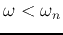
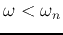

Consider the band-pass and band-stop filters shown below:

Do the following for each of the filters:
- Find the two cut-off frequencies
 and at which
in terms of the three components
and at which
in terms of the three components  ,
,  ,
and :
,
and :
- Find the bandwidth (of the passing or stop band)
in terms of the three components ,
, and .
- Generate the linear and Bode plots of (no need for the
phase plots) in Matlab.
- Implement the filter with the available compoents R, L and C in the
lab so that
and
.
- Generate the linear and Bode plots of of your circuit
and compare with the simulation by Matlab. If there is any discrepancy,
explain.
Solution:
- The FRF of the first circuit is
When
 , , no current goes through
and the voltage across it is zero the output voltage is the
same as the input voltage. Otherwise either
or
, is finite, the voltage across is
non-zero, the output voltage is reduced. This is a band-pass
filter:
, , no current goes through
and the voltage across it is zero the output voltage is the
same as the input voltage. Otherwise either
or
, is finite, the voltage across is
non-zero, the output voltage is reduced. This is a band-pass
filter:
- The FRF of the second circuit is
when
, , the LC parallel branch
is an open-circuit, the output voltage is zero. Otherwise either
or
, is finite, the
voltage is non-zero. The circuit is a band-stop or band-block
filter:
The bandwidth is defined as
, the
difference between the two cut-off frequencies
and
at which
. For both filters,
the cut-off frequencies can be found by solving
i.e., the two filters always have the same bandwidth.

Choose  and so that
, choose so that
.
and so that
, choose so that
.